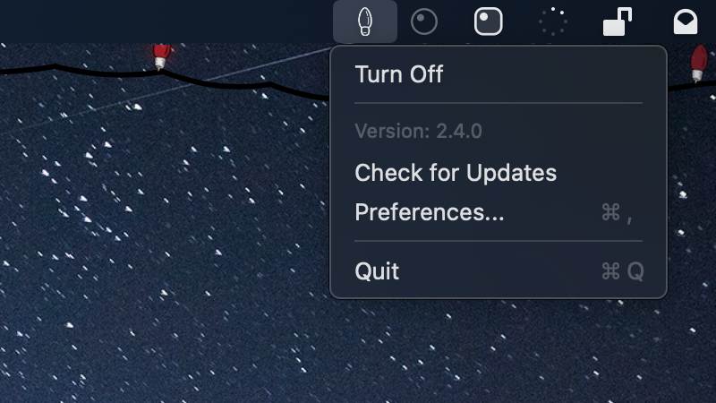

Fairy Lights
Decorate your menu bar for the holiday season.
Download Latest VersionVersion 2.5.3 for macOS 14+
Features
Menu Bar App
Control your lights straight from the menu bar—just two clicks, no need to open another app or window.
Lightweight
Fairy Lights is easy on your Mac's resources, running quietly in the background without slowing anything down.
Automatic Updates
Always up to date without the hassle. Choose how often you want update checks—daily, weekly, or monthly.
See Fairy Lights in Action


Free and Open Source
Fairy Lights is completely free and open source, licensed under GPLv3. The code is available on GitHub for anyone to view, modify, or contribute to.